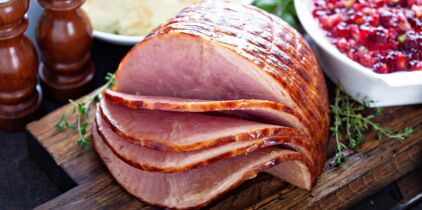
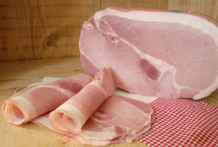
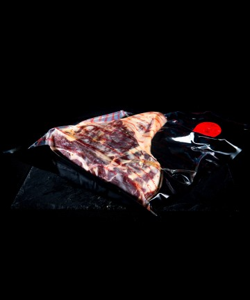
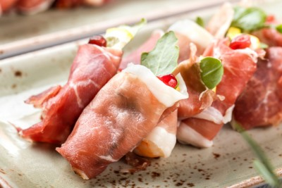

Jambon Cuit
-
Description : C'est du jambon qui a été cuit, généralement bouilli
ou rôti.
-
Utilisation : Il est souvent tranché et utilisé dans des sandwichs,
des salades, ou comme plat principal lors de repas.

Jambon Cru
-
Description : Il s'agit de jambon qui a été salé et séché. Il est
souvent très finement tranché.
-
Goût : Son goût peut varier en fonction de la région et de la
méthode de fabrication, mais il est généralement salé et a une
saveur intense.
-
Utilisation : Souvent consommé tel quel, enroulé autour de fruits ou
de fromage, ou utilisé comme ingrédient dans divers plats.

Jambon Fumé
-
Description : Le jambon est fumé pour lui donner une saveur
distincte.
-
Goût : Il a un goût fumé qui peut varier en intensité en fonction du
type de bois utilisé pour le fumage.
-
Utilisation : Peut être utilisé dans des sandwichs, des soupes, ou
comme plat principal.

Jambon de Parme
-
Description : Un jambon cru italien produit dans la région de Parme.
- Goût : Il a un goût délicat et salé.
-
Utilisation : Souvent servi en tranches fines en antipasti ou comme
ingrédient dans des plats de pâtes.

Jambon Ibérique
-
Description : Originaire d'Espagne, le jambon ibérique est souvent
issu du porc ibérique.
- Goût : Il a une saveur riche et complexe.
-
Utilisation : Consommé tel quel ou en tranches fines, souvent
accompagné de pain ou de fromage.
Jambon Blanc
-
Description : Aussi appelé jambon cuit, il est préparé en cuisant le
jambon.
-
Goût : Il a un goût plus doux que le jambon cru et peut être utilisé
de manière polyvalente.
-
Utilisation : Tranché pour des sandwichs, des salades ou comme
garniture pour des plats chauds.

Jambon Bayonne
-
Description : Un jambon cru du Sud-Ouest de la France, généralement
salé et séché.
- Goût : Il a un goût salé et légèrement sucré.
-
Utilisation : Servi en tranches fines ou utilisé dans la cuisine
française traditionnelle.